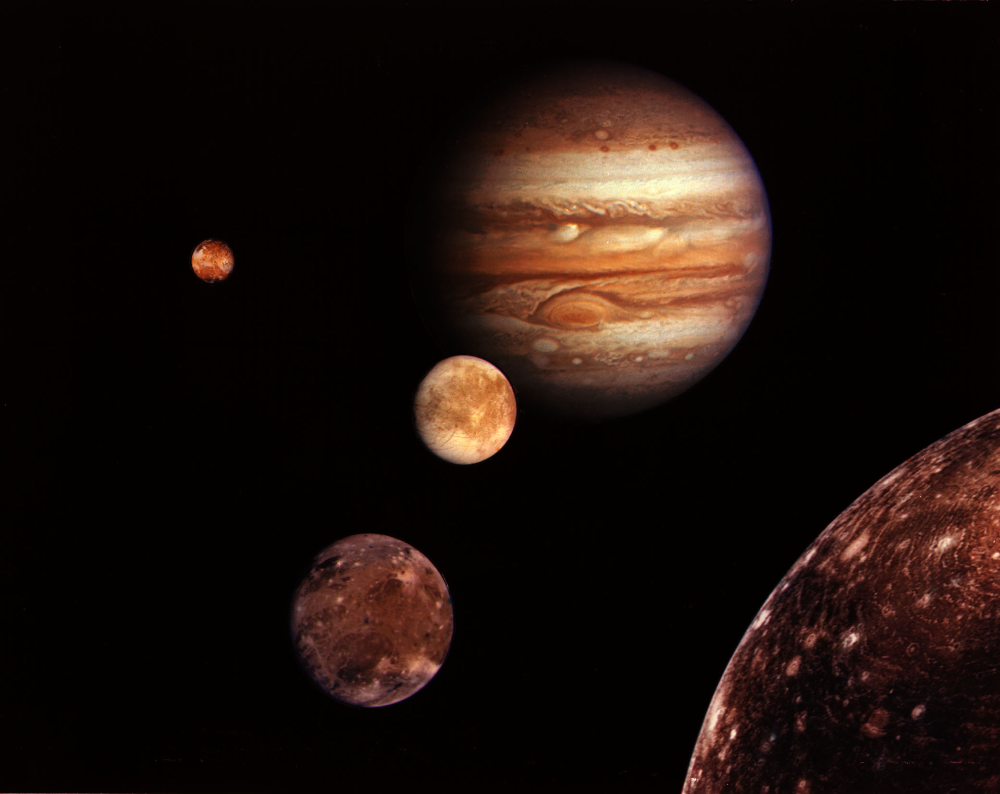

|
Jupiter is the biggest planet in our solar system. It's similar to a star, but it never got big enough to start burning.
It is covered in swirling cloud stripes. It has big storms like the Great Red Spot, which has been going for hundreds of years. Jupiter is a gas giant and doesn't have a solid surface, but it may have a solid inner core about the size of Earth. Jupiter also has rings, but they're too faint to see very well. |
|
|
Jupiter is about 90% hydrogen and 10% helium (by numbers of atoms, 75/25% by mass) with traces of methane, water, ammonia
and "rock". This is very close to the composition of the primordial Solar Nebula from which the entire solar system was formed. Saturn has a similar composition, but Uranus and Neptune have much less hydrogen and helium. |
|
|
The outermost layer is composed primarily of ordinary molecular hydrogen and helium which is liquid in the interior and gaseous
further out. The atmosphere we see is just the very top of this deep layer. Water, carbon dioxide, methane and other simple molecules are also present in tiny amounts. |
|
|
The vivid colors seen in Jupiter's clouds are probably the result of subtle chemical reactions of the trace elements in Jupiter's
atmosphere, perhaps involving sulfur whose compounds take on a wide variety of colors, but the details are unknown. The colors correlate with the cloud's altitude: blue lowest, followed by browns and whites, with reds highest. Sometimes we see the lower layers through holes in the upper ones. |
|  |
Jupiter has 67 known satellites : the four large Galilean moons plus many more small ones some of which have not yet been named:
|
|
Before the discoveries of the Voyager missions, Jupiter's moons were arranged neatly into four groups of four, based on commonality
of their orbital elements. Since then, the large number of new small outer moons has complicated this picture. There are now thought to be six main groups, although some are more distinct than others. |
|
|
A basic sub-division is a grouping of the eight inner regular moons, which have nearly circular orbits near the plane of Jupiter's
equator and are thought to have formed with Jupiter. The remainder of the moons consist of an unknown number of small irregular moons with elliptical and inclined orbits, which are thought to be captured asteroids or fragments of captured asteroids. Irregular moons that belong to a group share similar orbital elements and thus may have a common origin, perhaps as a larger moon or captured body that broke up. |